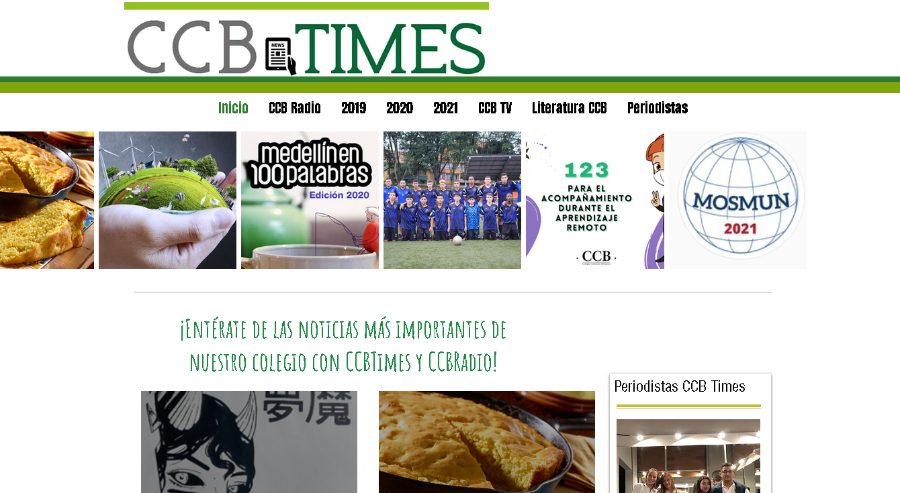
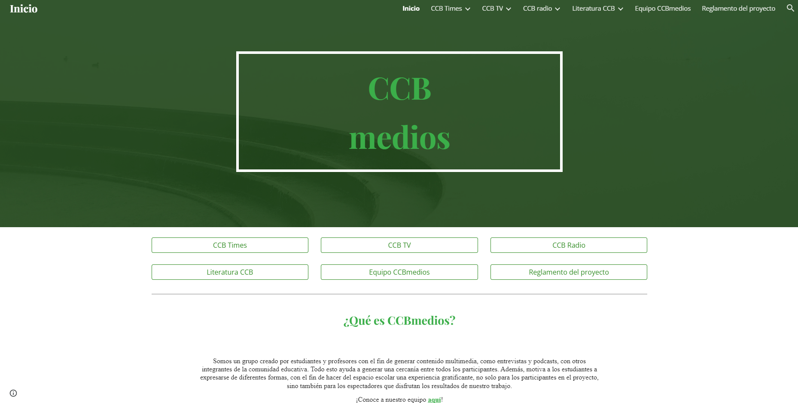

CCB Medios nace gracias al profesor Fabian Alberto Ramirez. Desde hace mas de 15 años ha sostenido el proyecto con los estudiantes con el propósito de comunicar lo que muchas vecespasa por desprovisto.
Algunas de las actividades de equipos anteriores se encuentran en la web en forma de videos, artículos e incluso emisiones de radio, desafortunadamente otros han sido extraviados y posiblemente no serán recuperados.

Entre los años 2017 y 2019 el único proyecto de comunicaciones (CCB Medios) fue CCB Radio, gracias a los esfuerzos de Fabian.
En 2020 cambió el panorama al introducir el periodico (CCB Times) y al continuar con el programa de Radio. Esto fue posible gracias al equipo de Mariana Palacio, Juan David Mejia y Mariana Arboleda.

Quienes por herencia continuaron en 2021 fueron Antonia Volkman, Isabela Cuartas y su equipo.
Más tarde en 2022 se tomó una nueva perspectiva y se inició CCB TV. El equipo del momento estaba conformado por Amalia Trujillo, Maria Alejandra Cisneros, Maria Antoria Henao Naranjo, Maximiliano Bustamante y Mariángel Montoya.
El año pasado el proyecto se expandió bajo el liderazgo de Maria Aleandra Cisneros , Alicia Correa y Sebastián Cabra.
Actualmente se están recuperando los proyectos anteriores que fueron dejados de lado mientras se innova la perspectiva con Fabian y el equipo actual conformado por Cristian Hurtado, Federico Betancur, Ana Sofía Valderrama y Jeronimo Moreno.